Which MELODY user are you?
In MELODY there are three types of user.
Registered users are members of a project that have a registered GitHub account.
For instance, MELODY dashboard is developed and maintained by members of the Polifonia H2020 project. All project members have a GitHub account and are members of the GitHub organisation that published MELODY. Registered users create and modify all stories that appear in MELODY dashboard. When they publish a story, this appears in the left sidebar, along with a button to modify it.
External users with a GitHub account are users that have a GitHub account, but they are not registered as members of the project.
External users can create and modify only the stories they authored. Stories do not appear in MELODY dashboard. Instead, these are published (for free) in MELODY stories. If a non registered user wants to modify a story published in MELODY stories, after the login in MELODY dashboard, on the top-right menu a button named Modify your stories will appear, showing the list of user's stories.
External users without a GitHub account are curious users that do not have a GitHub account, but they want to try out MELODY dashboard.
This kind of user can access the dashboard and create their stories. However, at the end of the session the story is not saved anywhere (neither in MELODY dashboard, nor in MELODY stories). Therefore users are invited to immediately export their story.
All users can export any story as a web-ready document (HTML, CSS, JS) or PDF, as well as any chart or graph (as image or embeddable code snippet).
Welcome Page
The welcome page gives you access to the most important functionalities.

The homepage of MELODY. You can login or start immediately.
The left sidebar includes data stories created by registered users, grouped by section. From the footer you can access the documentation (this document), while from the top right menu you can sign in with your GitHub credentials and create a new data story.
If you are a registered user, your stories will always be accessible from the left sidebar. From there you can modify, delete, or see the final result.
If you are an external user with a GitHub account, your stories will be published on MELODY stories. To access and modify your stories, use the button named Modify your stories on the top right menu (it shows when you are logged in).
If you are an external user without a GitHub account, your stories cannot be published nor modified. Once you create a story, you will be asked to export it, either as a web document or as a PDF.
Create a new story
To create a new story, click on Create a story, in the top right menu. If you haven't logged in yet, you will be redirected to another page and you will be asked whether you want to do it.
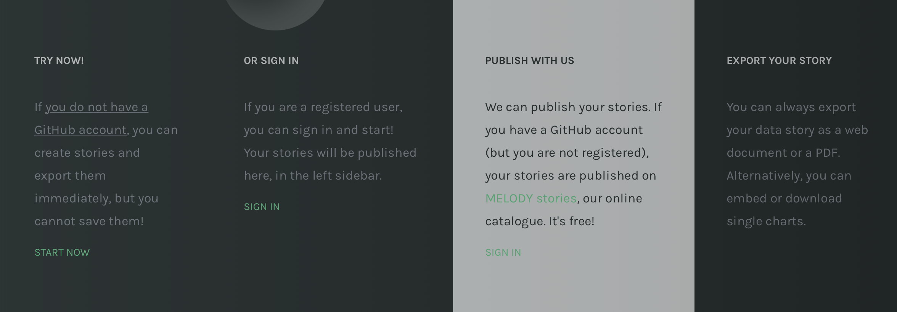Choose whether to login or try MELODY out.
If you do not have a GitHub account, click on START NOW
If you have a GitHub account, click on SIGN IN. If you are a registered user, we will know!
You will be redirected to the setup page of your story.
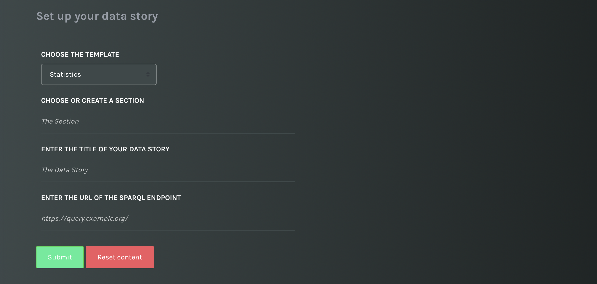The setup page of the data story.
Select the template
Data stories are built on templates, a set of layout instructions for paginating contents. We plan to offer several templates. To date we have one template called statistics, which offers the following functionalities:
- display on a canvas text contents, charts, and data summaries.
- an interactive text search that allows to manipulate results (e.g. make new searches based on a specific result value).
- a geographical map. Data points can be filtered with user-defined filters.
Select the section
Only if you are a registered user, you will be asked to choose a section.
Sections are thematic groups including one or more stories, that appear on the left sidebar. Create a new section or select an existing one from the dropdown menu.
Select the section of your story (only registered users).
Select the title
The title of the data story doesn't need much explanation. It's the first prominent communication tool in the narrative of the data story you're going to create. You can change it later.
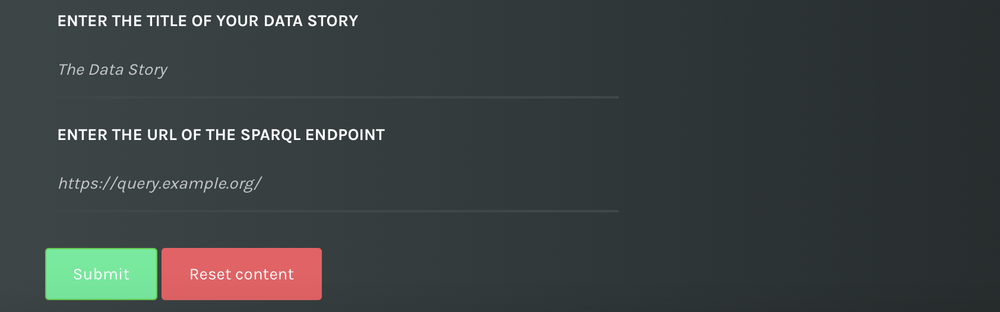Choose a title and provide the URL of the SPARQL endpoint.
Select the SPARQL endpoint
Lastly, you must include the URL of an online SPARQL endpoint to retrieve data and populate the charts. Check carefully that it's working.
Submit and go!
Once you submit your setup information, you are redirected to a user-friendly interface based on the template you've chosen.
If you are a registered user, a link to your datastory will appear in the left sidebar under the name of the section you chose.
Templates
Regardless of the template you chose, your task is to select the UI elements to be added to your canvas (e.g. texts, bart charts, text searches), write a SPARQL query to populate the elements, and browse the preview of the results. The interface is WYSIWYG (What You See Is What You Get), meaning you will be able to (i) see immediately results of your queries as charts, (ii) modify the order of contents (when applicable) and (iii) preview the final data story to be published.
All templates share a few elements
- Color picker
- Title (mandatory)
- Subtitle
- Description
- Curators
You can change the default colors of your story. The new colors will be used in every chart and will create a duotone background effect on the secondary menu.
Similarly, the title, the subtitle, the introduction, and the curators of the story can be modified. The position of these elements in the canvas cannot be modified.
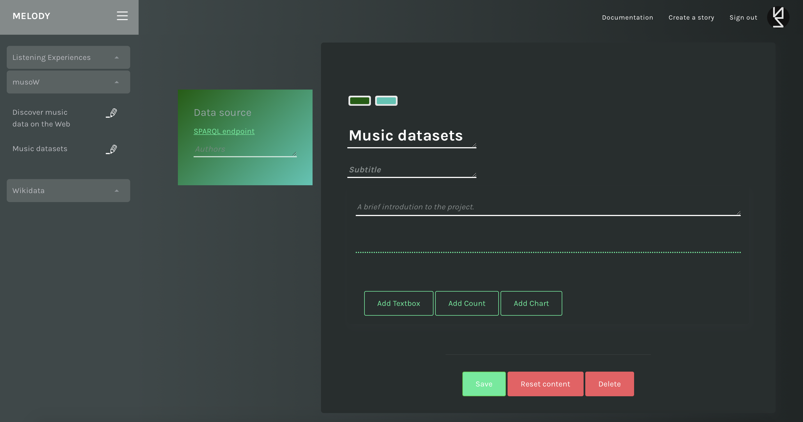Color picker, title, subtitle, description, and curators.
The Statistics template
The Statistics template is designed for a classic data story, where you can combine textual information with statistical information such as counters and charts to create a sequential narrative.
The elements of the page are:
- Text boxes
- Counters
- Charts
- Tables
You can add as many elements as you want. To add a new element use the respective button, and a box will appear. Each box can be moved up and down or removed.
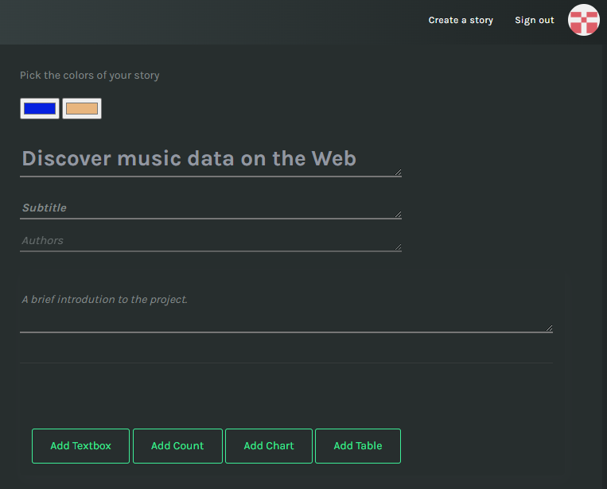The buttons to add elements to the page.
Textboxes
Text boxes are meant to include free text descriptions. You can edit your content in a simple text editor that allows you to style text in bold, italics, underlined, ordered and unordered lists, and to include hypertext link. If you want to add a title, you can choose between two dimensions (heading 2 and heading 3), or normal if you want to render text as a paragraph.
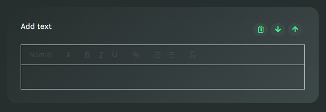Text box. Each box includes buttons to move up/down or delete an element.
Counters
Counters can be used to give some figures on the dataset, e.g. the number of individuals of a certain class. Counters are rendered as boxes including a counting and a label. The counting is the result of a SPARQL query, while the label is manually associated. To create a counter, fill in the two respective text areas:
- The SPARQL query (required). It MUST return a number only, and the variable name MUST be named ?count.
- The label. A short label to be associated to the number in the box.
The SPARQL query should look like follows:
SELECT (COUNT(?s) AS ?count)
WHERE {?s ?p <https://w3id.org/musow/vocab/repository>.} A SPARQL query to create a counter
The query automatically runs against the endpoint when moving the mouse out of the text area, and the resulting box appears on top.
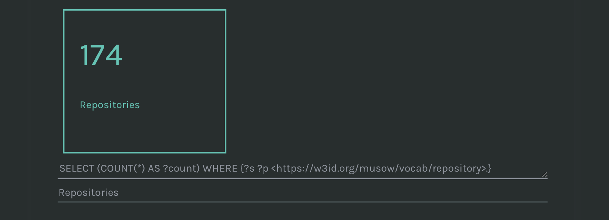Counter: a SPARQL query that returns a number and a label.
Charts
You can choose between a few charts: Bar chart, Line chart, Doughnut chart and Scatter Plot.
For each chart, the following information must be provided:
- the type of chart (required), to be selected from a dropdown;
- one (or more) SPARQL query (required), that returns one or two variables with specific naming conventions;
- the title of the chart (required)
- labels for the chart axes (optional);
- operations (optional), to aggregate data returned by the query.
However, it is important to check the requirements of each chart. It will be possible to do this at the time of its creation.
Overall, a SPARQL query to build a chart can be of two types:
- Aggregating: the query retrieves aggregated data that are ready to be displayed in a chart. That is, the query MUST return two variables. In most cases, they need to be named ?label and ?count. ?label can be a categorical/numerical value to be displayed on the x axis, while ?count MUST be a numerical value, to be displayed on the y axis. However, it is important to check the documentation of each chart to check special needs.
- Non-Aggregating: the query retrieves non-aggregated data, which are not immediately suitable for charting. The query MUST return only one variable, usually called ?label. The values of ?label must be grouped by their counting using the count checkbox under the chart. However, it is important to check the documentation of each chart to check special needs.
Bart charts, line charts and doughnut charts
To build bar charts, line charts and doughnut charts you can perform both aggregating and non-aggregating queries. An aggregating query to plot a bar chart looks like follows:
SELECT ?label (COUNT(?content) AS ?count)
WHERE {
?content <https://schema.org/additionalType> ?type.
?type rdfs:label ?label .
} GROUP BY ?label An aggregating SPARQL query to create a bar chart.
The query returns two variables (?label and ?count) that fit the requirements, hence no further operations are needed.
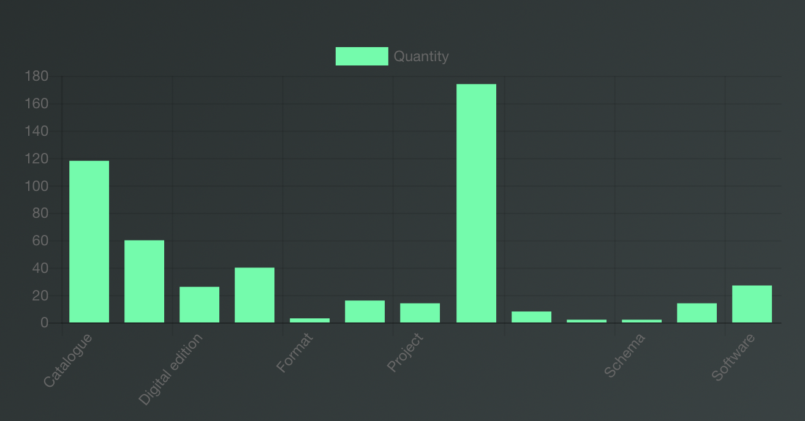A bar chart created with an aggregating query.
In case of non-aggregating queries, the query must return only one variable called ?label, and the operation count must be checked in order to plot results. For instance, the non-aggregating SPARQL query for a doughnut chart:
SELECT ?label
WHERE {
?content <https://schema.org/additionalType> ?type .
?type rdfs:label ?label .
} A non-aggregating SPARQL query to create a doughnut chart.
The query returns the same values as the aggregating query above, provided that the checbox Count is selected.
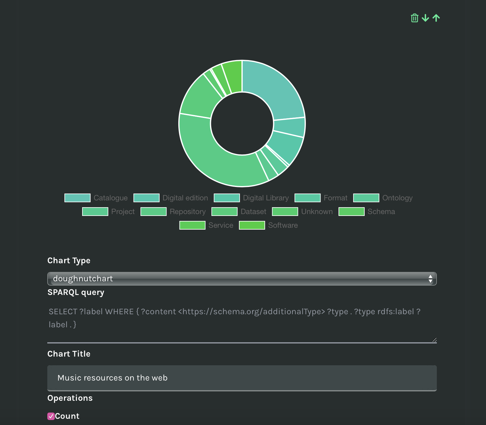A doughnut chart created with a non-aggregating SPARQL query.
Scatter plots
To build scatterplots you can perform one or more aggregating SPARQL queries that return two numerical variables: ?x and ?y. An aggregating query to plot a scatter plot looks like follows:
SELECT DISTINCT ?y ?x
WHERE {
?item wdt:P31 wd:Q11424.
?item p:P444 ?review_statement .
?review_statement ps:P444 ?y .
?review_statement pq:P447 wd:Q105584 .
?review_statement pq:P459 wd:Q108403393 .
?item p:P2142 ?box_office_statement .
?box_office_statement ps:P2142 ?x .
?box_office_statement pq:P3005 wd:Q30 .
} An aggregating SPARQL query to create a scatter plot.
The query returns two variables (?x and ?y) that represent the coordinates of each point on the Cartesian axes. In this particular case, the main query (aqua green) identifies films and asks for their U.S. box office revenue (x-axis) and review score (y-axis) in Rotten Tomatoes. A second query (orange) was added that again returns data on films rated by Rotten Tomatoes, with the difference being worldwide box office. Therefore, the structure remains the same: the main subject is fixed (movies), the variables (source of the box office data in this case) change.
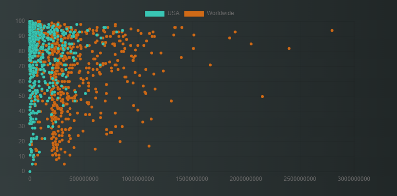A scatter plot created with two aggregating queries.
Table
The table field is used to display the results in a simple tabular form. To create a table, fill in the two respective text areas:
- The SPARQL query (required). A query that performs a search on the dataset and returns results in a table.
- The title of the table (optional).
The form to fill to create a simple table.
For instance, a query on Wikidata to return horses and some related information would look like follows:
SELECT DISTINCT ?horse ?horseLabel ?mother ?motherLabel ?father ?fatherLabel (year(?birthdate) as ?birthyear) (year(?deathdate) as ?deathyear) ?genderLabel
WHERE
{
?horse wdt:P31/wdt:P279* wd:Q726 .
OPTIONAL{?horse wdt:P25 ?mother .}
OPTIONAL{?horse wdt:P22 ?father .}
OPTIONAL{?horse wdt:P569 ?birthdate .}
OPTIONAL{?horse wdt:P570 ?deathdate .}
OPTIONAL{?horse wdt:P21 ?gender .}
SERVICE wikibase:label {
bd:serviceParam wikibase:language "[AUTO_LANGUAGE],fr,ar,be,bg,bn,ca,cs,da,de,el,en,es,et,fa,fi,he,hi,hu,hy,id,it,ja,jv,ko,nb,nl,eo,pa,pl,pt,ro,ru,sh,sk,sr,sv,sw,te,th,tr,uk,yue,vec,vi,zh"
}
}
ORDER BY ?horse
LIMIT 20A SPARQL query performing a tabular search in Wikidata.
The SPARQL query does not have constraints on the variable names, and it can return as many variables as needed. However, to make results easy to read, labels can replace URIs if these are named ?{variable}Label. For instance, in the result table below, values of the variable ?horse (URIs) are replaced with values of the variable ?horseLabel, and include a link to the URI (?horse).
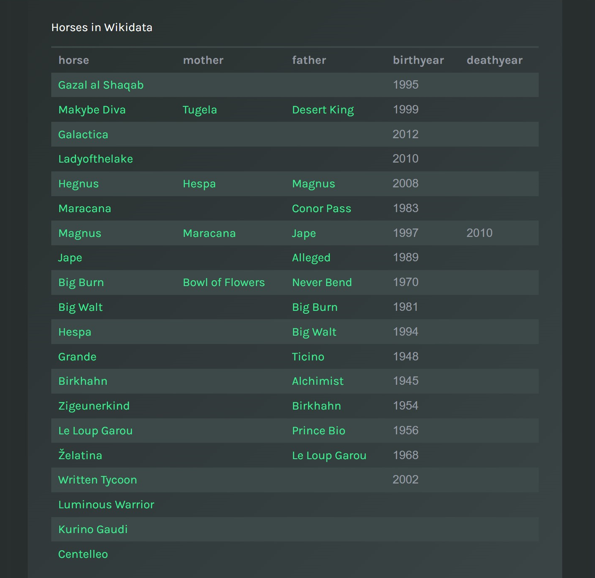An example of a simple table.
The Relations template
The Relations template provides an interactive, iterative, text search to show relations between data, designed according to authors' preferences. With Relations you can design a flow of searches, based on results of a previous one. You can combine results of multiple searches and highlight patterns, or you can let the reader discover new insights in a follow-your-nose fashion.

Relations: create interactive, iterative text searches on a dataset.
The main elements of the template are:
- Text search
- Action on results
- Combine results
You can add as many searches as you want. Actions and combinations of results can be hierarchically attached to any search results (even to results of actions or combinations). In this template, elements can be deleted but cannot be moved up/down, since anyway is the hierarchical order that matters.
Text search
A text search presents two areas to be filled in, namely:
- The SPARQL query (required). A query that performs a text search on the dataset and returns results in a table.
- The title of the search (optional). The title appears on top of the final search box.
Below the two areas, a preview of the final search box is shown. Once you fill in the query, you can immediately try the results.
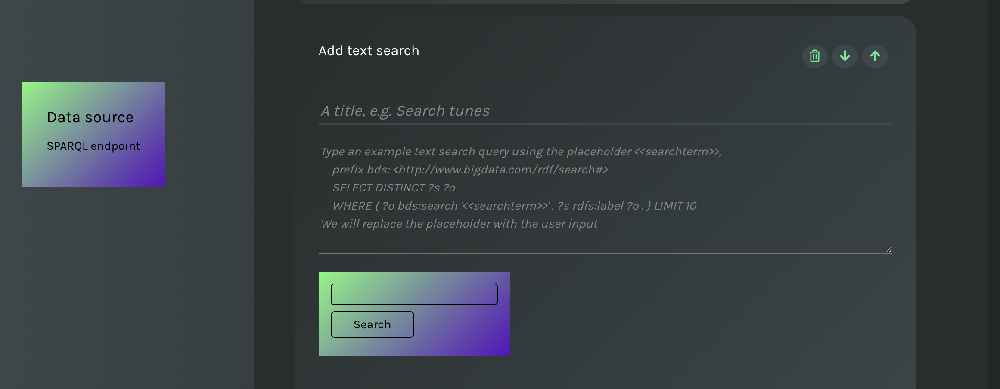Text search: add a SPARQL query in the area and try it immediately in the search box.
While the SPARQL query does not have constraints on the variable names, and it can return as many variables as needed, it requires a placeholder to be included instead of the term to be searched. The placeholder is usually enquoted, and MUST be called
<<searchterm>>
For instance, a query on Wikidata to return a) museums whose name includes the search term (exact match in this case), and b) their country, would look like follows:
SELECT DISTINCT ?item ?itemLabel ?country ?countryLabel WHERE {
SERVICE wikibase:mwapi {
bd:serviceParam wikibase:endpoint "www.wikidata.org";
wikibase:api "EntitySearch";
mwapi:search "<<searchterm>>";
mwapi:language "en".
?item wikibase:apiOutputItem mwapi:item.
}
?item (wdt:P279|wdt:P31) wd:Q207694 ; wdt:P17 ?country .
SERVICE wikibase:label {
bd:serviceParam wikibase:language "[AUTO_LANGUAGE],en"
}
} LIMIT 20A SPARQL query performing a text search in Wikidata.
SPARQL endpoints usually provide specific APIs for text searches. Therefore the query might significantly change depending on such services.
Once you type the above query, it returns the following result
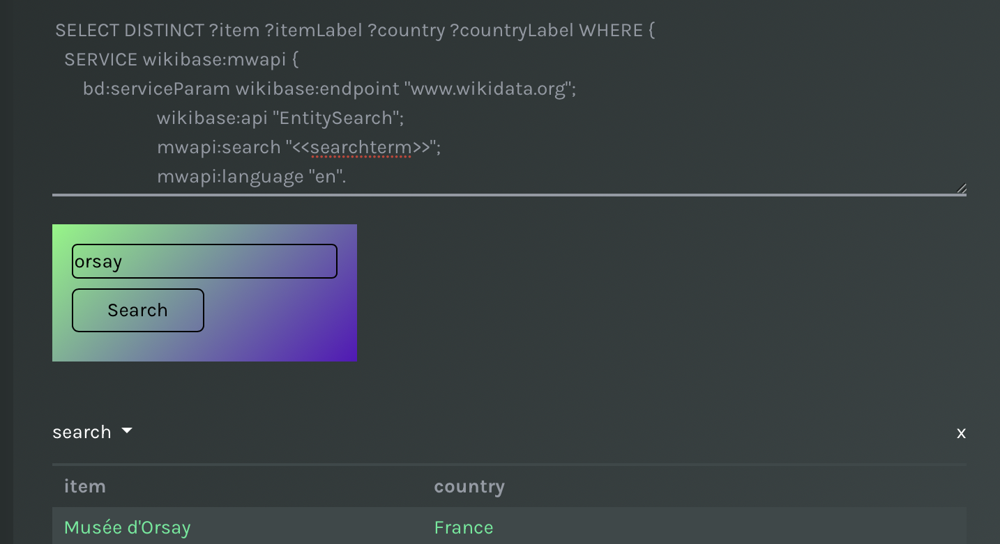Text search: preview results of a text search.
N.B. The above query would usually return a table with four columns, one for each variable in the SELECT clause. To make results easy to read, labels can replace URIs if these are named ?{variable}Label. For instance, in the above table, values of the variable ?item (URIs) are replaced with values of the variable ?itemLabel, and include a link to the URI (?item).
Action on results
Actions are SPARQL queries that can be attached to results of a previous search (or action). Again, results of the SPARQL query are shown as tables. In detail, actions are attached to columns of the table, i.e. a variable name of a previous SPARQL query, and these appear as buttons in the former table.
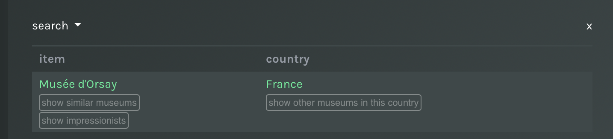Actions appear as buttons near results of a previous search (or action).
To add an action click on the button Add action to results below the previous SPARQL query
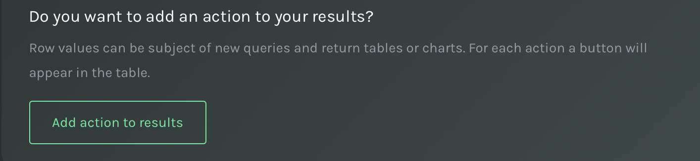Add an action to results of a SPARQL query.
An action consists of three areas to be filled in, namely:
- The name of action (required). It will appear as a button in the table
- The name of the column (required). The name of the column of the previous search to which to attach the action. The button will appear for each element in that column.
- The SPARQL query (required). It does not have any constraint on the variable names, it can return as many values as needed, and the same rule for replacing URIs with their labels apply also here.
However, a placeholder with the name of the column MUST be included in the query in the following form
<<{variable}>>For instance, if the column name is ?item, the placeholder will be <<item>> (see the picture below, where an action called show similar museums is attached to the column item of the text search described above).
Multiple actions can be attached to the same column, as well as to different columns.
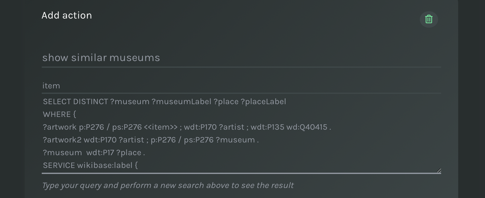Actions: select the column of a previous search and use the placeholder in the SPARQL query.
To preview the results of an action, go back to the preview of the initial text search, perform a search and click on the button that appears in results. The new query replaces the placeholder with the value of the cell where the action was selected.
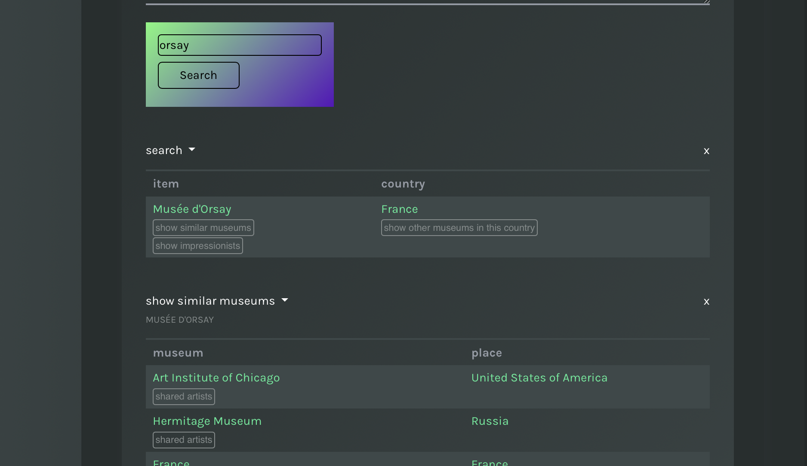Actions: perform a search and click on the Action button.
In the above examples you can already see that results of an action (Show similar museums) can be further associated with new actions (e.g. shared artists). To attach an action to results of a previous action, use the button you find below the latter.
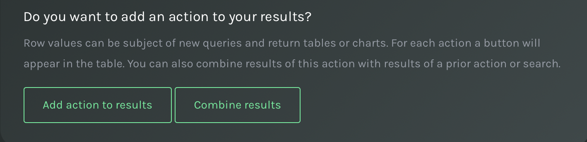Actions: attach a new action to results of an action.
Actions are strictly hierarchically organised, i.e. an action can be attached to an immediate parent action or search, but not to anchestors. There is no limit in the hierarchy, so you can create an infinite flow of research paths.
Combine results
Results of an action can be associated with a combine results action that combines (a) the user-selected value from the initial search and (b) the user-selected value from the action results. In other terms, once you have at least one text search and one action, you can perform new queries that include individuals from the two sets of results, and show results in a new table.
For instance, the above text search returns a list of museums that include the search term Orsay. The column item of this set of results is associated with an action that shows similar museums (i.e., the action show similar museums). The table with similar museums includes a column called museum. Now, we could combine (a) Musee d'Orsay (item) and (b) Metropolitan Museum of Art (museum) in a new query to show the artists these museums have in common. We can call this combined-results-action shared artists.
The box combine results action looks exactly like an action, including three text areas, namely:
- The name of the action (required). It appears as button in the table.
- The name of the column (required). Specify the column name of the table (result of an action) to which to attach the combine-results-action (in the above example it would be museum).
- The SPARQL query (required). In a combine-results-action there MUST be two placeholders, respectively identifying: (a) the column name of the action to be attached (e.g. museum) and (b) the column name of the parent text search or action (e.g. item).
N.B. Be aware that the two placeholders, hence the two columns from the two sets of results, MUST NOT have the same name.
Following the previous example, the SPARQL query below returns all artists whose artworks are on display in both the selected museums.
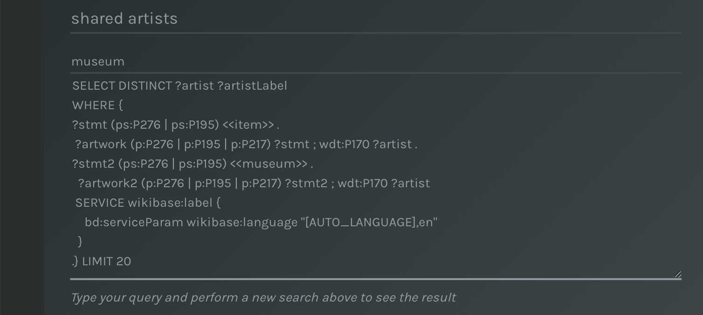Combine results: a SPARQL query that combines individuals of two sets of results.
To see the results of a combine-results action, perform a new text search in the preview (e.g. search Orsay), then click on the button that performs the first action (Show similar museums), and finally click on the button of the combine-results action (Shared artists)
The result of the combine-results action would look like follows.
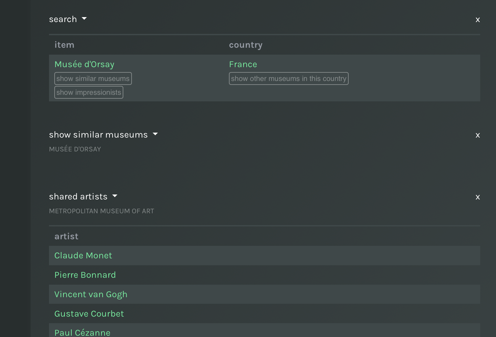Combine results: follow the flow of queries and see results of a combine-results action.
The Maps template
The Maps template provides an interactive geographic map. Data points can be associated with tooltips with customisable content and filters can be applied to filter out points on the map.
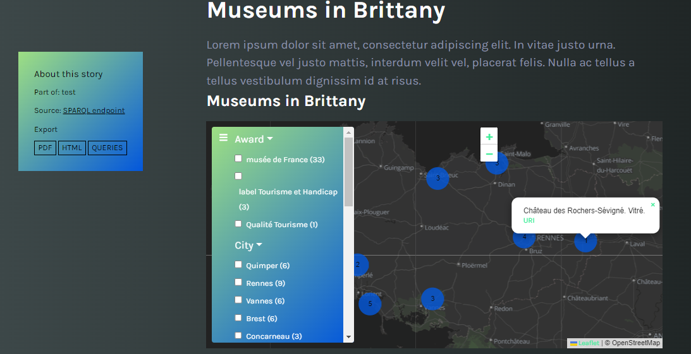Maps: an interactive map with filters.
The main elements of the template are:
- A SPARQL query to retrieve the data points (required)
- Tooltips
- Filters
In a story you can add only one map, but you can add as many filters as you want.
Data Points
The initialise the map with data points you need two elements:
- A SPARQL query (required) that returns at least the mandatory variables:
- ?point: an URI identifying the points
- ?lat: the latitude of the data point
- ?long: the longitude of the data point
- The title of the map (optional).
Once you type the query, you can immediately see a preview of the final map. Data points with the same location are grouped in bubbles, which expand/collapse on zoom. To prevent rerunning the query every time a change is done to the query, data points are cached. The button Rerun the query forces MELODY to perform again the query on demand.
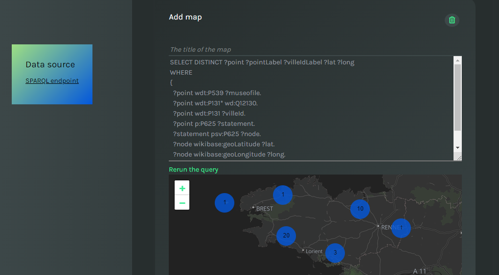Data points on the map.
For instance, a query on Wikidata to return museums in Brittany would look like follows:
SELECT DISTINCT ?point ?pointLabel ?villeIdLabel ?lat ?long
WHERE
{
?point wdt:P539 ?museofile.
?point wdt:P131* wd:Q12130.
?point wdt:P131 ?villeId.
?point p:P625 ?statement.
?statement psv:P625 ?node.
?node wikibase:geoLatitude ?lat.
?node wikibase:geoLongitude ?long.
SERVICE wikibase:label { bd:serviceParam wikibase:language "en". }
}A SPARQL query to retrieve coordinates of geographic points in Wikidata.
Tooltips
Clicking on each data point shows a tooltip. The content of the tooltips is defined in the same SPARQL query to retrieve the data points. In particular, each non-mandatory variable returned in the query appears in the tooltip in the same order as the corresponding variable is returned, separated by period. Following the previous example, we can show the label of the data point (?pointLabel) and the label of the corresponding city (?villeIdLabel). The URI of the data point is automatically added.

The tooltip of data points on the map.
Map Filters
To add a filter to the map you need to specify two elements:
- A SPARQL query (required) that returns the mandatory variables:
- ?point: a variable identifying the data points returned by the previous query. We will replace this variable with the list of data points returned by the previous query, so you do not need to repeat the patterns to identify what is a point.
- ?filter: the variable to be used as a filter. Can be a URI or a Literal
- ?filterLabel: the label of the filter in case the filter is a URI
- The title of the filter (required)
You can add as many filters as you want. Like with data points, to update the view, you must rerun the SPARQL query for data points first.
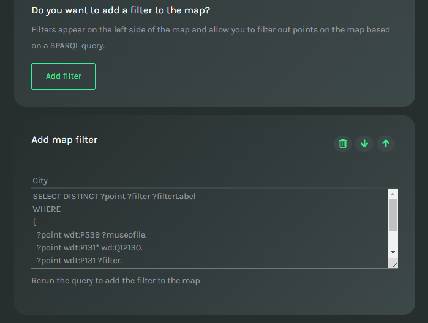The part of the form to add a filter to the map.
For instance, a query on Wikidata to return museums' cities in Brittany would look like follows:
SELECT DISTINCT ?point ?filter ?filterLabel
WHERE
{
?point wdt:P539 ?museofile.
?point wdt:P131* wd:Q12130.
?point wdt:P131 ?filter.
?filter rdfs:label ?filterLabel .
FILTER(LANG(?filterLabel) = "" || LANGMATCHES(LANG(?filterLabel), "en"))
}A SPARQL query that searches for museum's cities in Wikidata.
Filters appear as sections of a left sidebar in the map. Each section (filter) can be expanded, and it includes a list of checkboxes that the final user can use to filter data points.
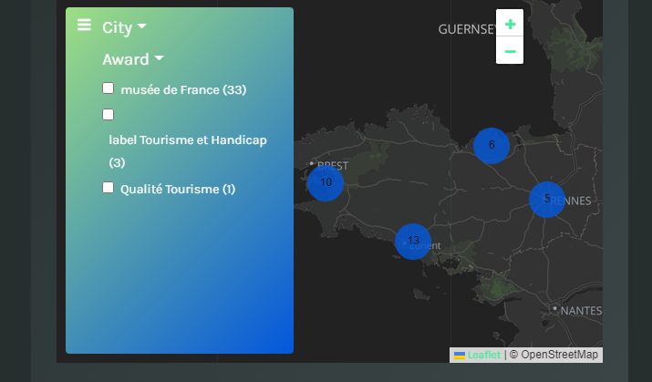The sidebar with filters of the map.
Publish and Export
When you save your work, you are redirected to the preview of the data story.
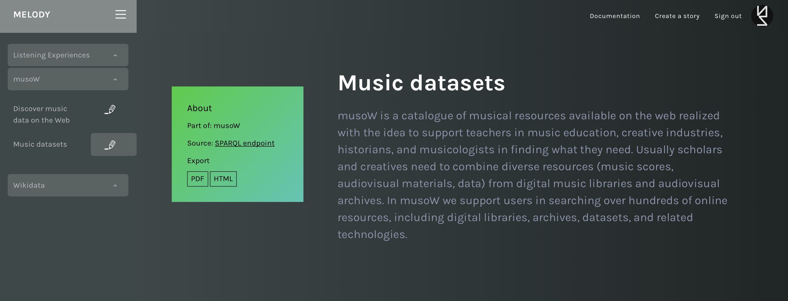The preview of the final data story: export as PDF/HTML in the secondary menu.
The final data story presents elements on the canvas in the same order defined by the designer. In the secondary menu, a few metadata and the export buttons are shown.
Modify your story
If you are a registered user, in the left sidebar you will see the title of your story under the section you chose. Your story is already published, and you can always access and modify it from there.
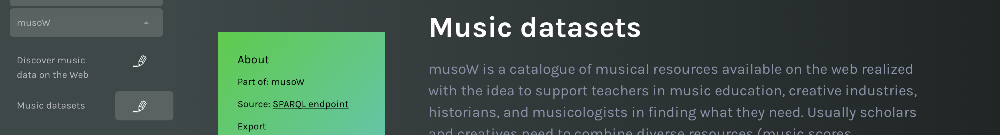Registered users: the story is published in MELODY dashboard and can be modified from the left sidebar.
If you are a non-registered user with a github account, in the secondary menu two buttons appear: you can continue modifying your story until you are happy, and you can publish it for free on Melody stories. Be aware that your story will not be saved if you leave the page or you do not publish it!
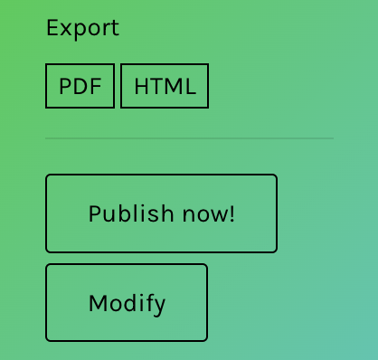Non-registered GitHub users: modify or publish the story.
If you are a user without any GitHub account, in the secondary menu only the Modify button will appear. You can continue modifying your story until you are happy, and you can export it. Be aware that your story will not be saved if you leave the page or you do not export it!
Export
The whole story can be exported as a PDF document or as a web document, ready to be published in you favourite platform. The exported story does not include the top menu and left sidebar. The export buttons appear in the secondary menu on the left of the story. Similarly, each chart can be saved as a .png image, or exported as an embeddable HTML code snippet.
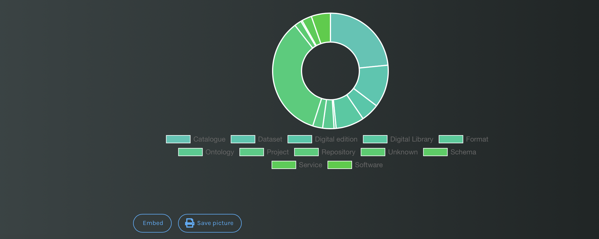Export charts as images or embeddable snippets.